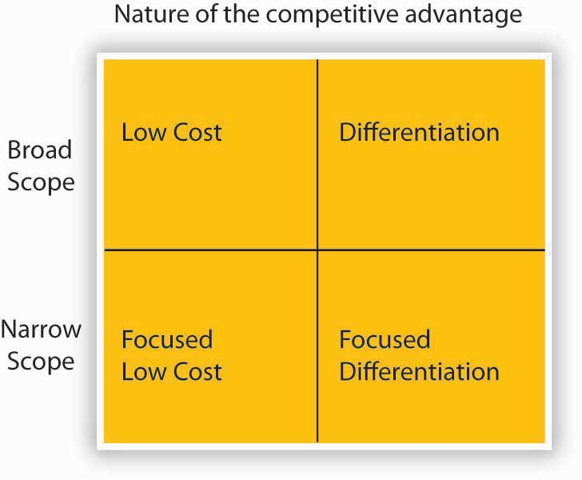

This section helps you understand that a strategy provides a company with focus. Strategy is ultimately about choice—what the organization does and does not do. As we’ve seen, vision and mission provide a good sense of direction for the organization, but they are not meant to serve as, or take the place of, the actual strategy. Strategy is about choices, and that eventually means making trade-offs such that the strategy and the firm are distinctive in the eyes of stakeholders. In this section, you will learn about strategic focus—that is, how trade-offs are reconciled—as well as two frameworks for thinking about what such focus might entail.
While there are different schools of thought about how strategy comes about, researchers generally agree that strategic focusWhen an organization is clear about its mission and vision and has a coherent, well-articulated strategy for achieving those. is a common characteristic across successful organizations. Strategic focus is seen when an organization is very clear about its mission and vision and has a coherent, well-articulated strategy for achieving those. When a once high-flying firm encounters performance problems, it is not uncommon to hear business analysts say that the firm’s managers have lost focus on the customers or markets where they were once highly successful. For instance, Dell Computer’s strategy is highly focused around the efficient sale and manufacture of computers and computer peripheral devices. However, during the mid-2000s, Dell started branching out into other products such as digital cameras, DVD players, and flat-screen televisions. As a result, it lost focus on its core sales and manufacturing business, and its performance flagged. As recently as mid-2008, however, Dell has realized a tremendous turnaround: “We are executing on all points of our strategy to drive growth in every product category and in every part of the world,” said a press release from Michael Dell, chairman and CEO. “These results are early signs of our progress against our five strategic priorities. Through a continued focus, we expect to continue growing faster than the industry and increase our revenue, profitability and cash flow for greater shareholder value.”Dell increases revenue and earnings, lowers operating expenses. (2008, May 28). Dell press release. Retrieved November 3, 2008, from http://www.dell.com/content/topics/global.aspx/corp/pressoffice/en/2008/2008_05_29_rr_000?c=us&l=en’s=corp.
Dell provides an excellent example of what is meant by strategic focus. This spirit of focus is echoed in the following two parts of this section where we introduce you to the complementary notions of strategy as trade-offs and strategy as discipline.
Three of the most widely read books on competitive analysis in the 1980s were Michael Porter’s Competitive Strategy, Competitive Advantage, and Competitive Advantage of Nations.Porter, M. (1985). Competitive advantage: Creating and sustaining superior performance. New York: Free Press; Porter, M. (1989). Competitive advantage of nations. New York: Free Press. Porter, M. (1980). Competitive strategy: Techniques for analyzing industries and companies. New York: Free Press, 1980; Porter, M. (2001, March). Strategy and the Internet. Harvard Business Review, pp. 63–78; Retrospective on Michael Porter’s Competitive strategy. (2002). Academy of Management Executive 16(2), 40–65. In his various books, Porter developed three generic strategies that, he argues, can be used singly or in combination to create a defendable position and to outperform competitors, whether they are within an industry or across nations. The strategies are (1) overall cost leadership, (2) differentiation, and (3) focus on a particular market niche.
These strategies are termed generic because they can be applied to any size or form of business. We refer to them as trade-off strategies because Porter argues that a firm must choose to embrace one strategy or risk not having a strategy at all. Overall lower cost or cost leadershipA strategy in which an organization attempts to gain a competitive advantage by reducing its costs below the costs of competing firms. refers to the strategy where a firm’s competitive advantage is based on the bet that it can develop, manufacture, and distribute products more efficiently than competitors. DifferentiationThe strategy where competitive advantage is based on superior products or service. refers to the strategy where competitive advantage is based on superior products or service. Superiority arises from factors other than low cost, such as customer service, product quality, or unique style. To put these strategies into context, you might think about Wal-Mart as pursuing a cost-leadership strategy and Harley Davidson as pursuing a differentiation strategyA strategy in which an organization seeks to distinguish itself from competitors through the perceived quality of its products or services..
Porter suggests that another factor affecting a company’s competitive position is its competitive scope. Competitive scope defines the breadth of a company’s target market. A company can have a broad (mass market) competitive scope or a narrow (niche market) competitive scope. A firm following the focus strategyA strategy in which an organization concentrates on a specific regional market, product line, or group of buyers in combination with its pursuit of either an overall cost leadership or differentiation strategy. concentrates on meeting the specialized needs of its customers. Products and services can be designed to meet the needs of buyers. One approach to focusing is to service either industrial buyers or consumers but not both. Martin-Brower, the third-largest food distributor in the United States, serves only the eight leading fast-food chains. It is the world’s largest distributor of products to the world’s largest restaurant company—McDonald’s. With its limited customer list, Martin-Brower need only stock a limited product line; its ordering procedures are adjusted to match those of its customers; and its warehouses are located so as to be convenient to customers.
Firms using a narrow focus strategy can also tailor advertising and promotional efforts to a particular market niche. Many automobile dealers advertise that they are the largest volume dealer for a specific geographic area. Other car dealers advertise that they have the highest customer satisfaction scores within their defined market or the most awards for their service department.
Another differentiation strategy is to design products specifically for a customer. Such customization may range from individually designing a product for a single customer to offering a menu from which customers can select options for the finished product. Tailor-made clothing and custom-built houses include the customer in all aspects of production, from product design to final acceptance, and involve customer input in all key decisions. However, providing such individualized attention to customers may not be feasible for firms with an industry-wide orientation. At the other end of the customization scale, customers buying a new car, even in the budget price category, can often choose not only the exterior and interior colors but also accessories such as CD players, rooftop racks, and upgraded tires.
By positioning itself in either broad scope or narrow scope and a low-cost strategy or differentiation strategy, an organization will fall into one of the following generic competitive strategies: cost leadership, cost focus, differentiation, and focused differentiation.
Figure 5.13 Porter’s Generic Strategies
Source: Porter, M. E. (1980). Competitive Strategy. New York: Free Press.
Cost leadership is a low-cost, broad-based market strategy. Firms pursuing this type of strategy must be particularly efficient in engineering tasks, production operations, and physical distribution. Because these firms focus on a large market, they must also be able to minimize costs in marketing and research and development (R&D). A low-cost leader can gain significant market share enabling it to procure a more powerful position relative to both suppliers and competitors. This strategy is particularly effective for organizations in industries where there is limited possibility of product differentiation and where buyers are very price sensitive.
Overall cost leadership is not without potential problems. Two or more firms competing for cost leadership may engage in price wars that drive profits to very low levels. Ideally, a firm using a cost-leader strategy will develop an advantage that others cannot easily copy. Cost leaders also must maintain their investment in state-of-the-art equipment or face the possible entry of more cost-effective competitors. Major changes in technology may drastically change production processes so that previous investments in production technology are no longer advantageous. Finally, firms may become so concerned with maintaining low costs that they overlook needed changes in production or marketing.
The cost-leadership strategy may be more difficult in a dynamic environment because some of the expenses that firms may seek to minimize are research and development costs or marketing research costs—expenses the firm may need to incur to remain competitive.
A cost-focus strategy is a low-cost, narrowly focused market strategy. Firms employing this strategy may focus on a particular buyer segment or a particular geographic segment and must locate a niche market that wants or needs an efficient product and is willing to forgo extras to pay a lower price for the product. A company’s costs can be reduced by providing little or no service, providing a low-cost method of distribution, or producing a no-frills product.
A differentiation strategy involves marketing a unique product to a broad-based market. Because this type of strategy involves a unique product, price is not the significant factor. In fact, consumers may be willing to pay a high price for a product that they perceive as different. The product difference may be based on product design, method of distribution, or any aspect of the product (other than price) that is significant to a broad group of consumers. A company choosing this strategy must develop and maintain a product perceived as different enough from the competitors’ products to warrant the asking price.
Several studies have shown that a differentiation strategy is more likely to generate higher profits than a cost-leadership strategy, because differentiation creates stronger entry barriers. However, a cost-leadership strategy is more likely to generate increases in market share.
A differentiation-focus strategy is the marketing of a differentiated product to a narrow market, often involving a unique product and a unique market. This strategy is viable for a company that can convince consumers that its narrow focus allows it to provide better goods and services than its competitors.
Differentiation does not allow a firm to ignore costs; it makes a firm’s products less susceptible to cost pressures from competitors because customers see the product as unique and are willing to pay extra to have the product with the desirable features. Differentiation can be achieved through real product features or through advertising that causes the customer to perceive that the product is unique.
Differentiation may lead to customer brand loyalty and result in reduced price elasticity. Differentiation may also lead to higher profit margins and reduce the need to be a low-cost producer. Since customers see the product as different from competing products and they like the product features, customers are willing to pay a premium for these features. As long as the firm can increase the selling price by more than the marginal cost of adding the features, the profit margin is increased. Firms must be able to charge more for their differentiated product than it costs them to make it distinct, or else they may be better off making generic, undifferentiated products. Firms must remain sensitive to cost differences. They must carefully monitor the incremental costs of differentiating their product and make certain the difference is reflected in the price.
Firms pursuing a differentiation strategy are vulnerable to different competitive threats than firms pursuing a cost-leader strategy. Customers may sacrifice features, service, or image for cost savings. Price-sensitive customers may be willing to forgo desirable features in favor of a less costly alternative. This can be seen in the growth in popularity of store brands and private labels. Often, the same firms that produce name-brand products produce the private-label products. The two products may be physically identical, but stores are able to sell the private-label products for a lower price because very little money was put into advertising to differentiate the private-label product.
Imitation may also reduce the perceived differences between products when competitors copy product features. Thus, for firms to be able to recover the cost of marketing research or R&D, they may need to add a product feature that is not easily copied by a competitor.
A final risk for firms pursuing a differentiation strategy is changing consumer tastes. The feature that customers like and find attractive about a product this year may not make the product popular next year. Changes in customer tastes are especially obvious in the fashion industry. For example, although Ralph Lauren’s Polo has been a very successful brand of apparel, some younger consumers have shifted to Tommy Hilfiger and other youth-oriented brands.
For a variety of reasons, including the differences between intended versus realized strategies discussed in an earlier section, none of these competitive strategies is guaranteed to achieve success. Some companies that have successfully implemented one of Porter’s generic strategies have found that they could not sustain the strategy. Several risks associated with these strategies are based on evolved market conditions (buyer perceptions, competitors, etc.).
Can forms of competitive advantage be combined? That is, can a firm straddle strategies so that it is simultaneously the low-cost leader and a differentiator? Porter asserts that a successful strategy requires a firm to stake out a market position aggressively and that different strategies involve distinctly different approaches to competing and operating the business. Some research suggests that straddling strategies is a recipe for below-average profitability compared to the industry. Porter also argues that straddling strategies is an indication that the firm’s managers have not made necessary choices about the business and its strategy. A straddling strategy may be especially dangerous for narrow scope firms that have been successful in the past, but then start neglecting their focus.
An organization pursuing a differentiation strategy seeks competitive advantage by offering products or services that are unique from those offered by rivals, either through design, brand image, technology, features, or customer service. Alternatively, an organization pursuing a cost-leadership strategy attempts to gain competitive advantage based on being the overall low-cost provider of a product or service. To be “all things to all people” can mean becoming “stuck in the middle” with no distinct competitive advantage. The difference between being “stuck in the middle” and successfully pursuing combination strategies merits discussion. Although Porter describes the dangers of not being successful in either cost control or differentiation, some firms have been able to succeed using combination strategies.
Research suggests that, in some cases, it is possible to be a cost leader while maintaining a differentiated product. Southwest Airlines has combined cost-cutting measures with differentiation. The company has been able to reduce costs by not assigning seating and by eliminating meals on its planes. It has also been able to promote in its advertising that its fares are so low that checked bags fly free, in contrast to the fees that competitors such as American and United charge for checked luggage. Southwest’s consistent low-fare strategy has attracted a significant number of passengers, allowing the airline to succeed.
Another firm that has pursued an effective combination strategy is Nike. You may think that Nike has always been highly successful, but it has actually weathered some pretty aggressive competitive assaults. For instance, when customer preferences moved to wide-legged jeans and cargo pants, Nike’s market share slipped. Competitors such as Adidas offered less expensive shoes and undercut Nike’s price. Nike’s stock price dropped in 1998 to half its 1997 high. However, Nike achieved a turnaround by cutting costs and developing new, distinctive products. Nike reduced costs by cutting some of its endorsements. Company research suggested the endorsement by the Italian soccer team, for example, was not achieving the desired results. Michael Jordan and a few other “big name” endorsers were retained while others, such as the Italian soccer team, were eliminated, resulting in savings estimated at over $100 million. Laying off 7% of its 22,000 employees allowed the company to lower costs by another $200 million, and inventory was reduced to save additional money. As a result of these moves, Nike reported a 70% increase in earnings for the first quarter of 1999 and saw a significant rebound in its stock price. While cutting costs, the firm also introduced new products designed to differentiate Nike’s products from the competition.
Some industry environments may actually call for combination strategies. Trends suggest that executives operating in highly complex environments, such as health care, do not have the luxury of choosing exclusively one strategy over another. The hospital industry may represent such an environment, as hospitals must compete on a variety of fronts. Combination (i.e., more complicated) strategies are both feasible and necessary to compete successfully. For instance, reimbursement to diagnosis-related groups, and the continual lowering of reimbursement ceilings have forced hospitals to compete on the basis of cost. At the same time, many of them jockey for position with differentiation based on such features as technology and birthing rooms. Thus, many hospitals may need to adopt some form of hybrid strategy to compete successfully.Walters, B. A., & Bhuian, S. (2004). Complexity absorption and performance: A structural analysis of acute-care hospitals. Journal of Management, 30, 97–121.
While Michael Porter’s generic strategies were introduced in the 1980s and still dominate much of the dialogue about strategy and strategizing, a complementary approach was offered more recently by CSC Index consultants Michael Treacy and Fred Wiersema. Their value disciplines model is quite similar to the three generic strategies from Porter (cost leadership, differentiation, focus). However, there is at least one major difference. According to the value disciplines model, no discipline may be neglected: threshold levels on the two disciplines that are not selected must be maintained. According to Porter, companies that act like this run a risk of getting “stuck in the middle.”
In their book, The Discipline of Market Leaders, they offered four rules that competing companies must obey with regard to strategy formulation:Treacy, M., & Wiersema, F. (1997). The discipline of market leaders: Choose your customers, narrow your focus, dominate your market. Reading, M Addison-Wesley.
Treacy and Wiersema describe three generic value disciplines: operational excellence, product leadership, and customer intimacy. As with Porter’s perspective about the importance of making trade-offs, any company must choose one of these value disciplines and consistently and vigorously act on it, as indicated by the four rules mentioned earlier.
The case study that their book uses to illustrate the “operational excellence” value discipline is AT&T’s experience in introducing the Universal Card, a combined long-distance calling card and general purpose credit card, featuring low annual fees and customer-friendly service.
Key characteristics of the strategy are superb operations and execution, often by providing a reasonable quality at a very low price, and task-oriented vision toward personnel. The focus is on efficiency, streamlined operations, supply chain management, no frills, and volume. Most large international corporations are operating according to this discipline. Measuring systems are important, as is extremely limited variation in product assortment.
Firms that do this strategy well are very strong in innovation and brand marketing. Organization leaders demonstrate a recognition that the company’s current success and future prospects lie in its talented product design people and those who support them. The company operates in dynamic markets. The focus is on development, innovation, design, time to market, and high margins in a short time frame. Company cultures are flexible to encourage innovation. Structure also encourages innovation through small ad hoc working groups, an “experimentation is good” mind-set, and compensation systems that reward success. Intel, the leading computer chip company, is a great example of a firm pursuing a successful product leadership strategy.
Companies pursuing this strategy excel in customer attention and customer service. They tailor their products and services to individual or almost individual customers. There is large variation in product assortment. The focus is on: customer relationship management (CRM), deliver products and services on time and above customer expectations, lifetime value concepts, reliability, being close to the customer. Decision authority is given to employees who are close to the customer. The operating principles of this value discipline include having a full range of services available to serve customers upon demand—this may involve running what the authors call a “hollow company,” where a variety of goods or services are available quickly through contract arrangements, rather than the supplier business having everything in stock all the time.
The recent partnership between Airborne Express, IBM, and Xerox is a great example of an effective customer intimacy strategy. Airborne also provides centralized control to IBM and Xerox part-distribution networks. Airborne provides Xerox and IBM with a central source of shipment data and performance metrics. The air-express carrier also manages a single, same-day delivery contract for both companies. In addition, Airborne now examines same-day or special-delivery requirements and recommends a lower-priced alternative where appropriate.Retrieved November 3, 2008, from http://www.logisticsmgmt.com/article/CA145552.html.
Treacy and Wiersema maintain that, because of the focus of management time and resources that is required, a firm can realistically choose only one of these three value disciplines in which to specialize. This logic is similar to Porter’s in that firms that mix different strategies run the risk of being “stuck in the middle.” Most companies, in fact, do not specialize in any of the three, and thus they realize only mediocre or average levels of achievement in each area.
The companies that do not make the hard choices associated with focus are in no sense market leaders. In today’s business environment of increased competition and the need more than ever before for competitive differentiation, their complacency will not lead to increased market share, sales, or profits.
“When we look at these managers’ businesses [complacent firms], we invariably find companies that don’t excel, but are merely mediocre on the three disciplines…What they haven’t done is create a breakthrough on any one dimension to reach new heights of performance. They have not traveled past operational competence to reach operational excellence, past customer responsiveness to achieve customer intimacy, or beyond product differentiation to establish product leadership. To these managers we say that if you decide to play an average game, to dabble in all areas, don’t expect to become a market leader.”Treacy, M., & Wiersema, F. (1997). The discipline of market leaders: Choose your customers, narrow your focus, dominate your market (p. 40). Reading, M Addison-Wesley.
Within the context of redesigning the operating model of a company to focus on a particular value discipline, Treacy and Wiersema discuss creating what they call “the cult of the customer.” This is a mind-set that is oriented toward putting the customer’s needs as a key priority throughout the company, at all levels. They also review some of the challenges involved in sustaining market leadership once it is attained (i.e., avoiding the natural complacency that tends to creep into an operation once dominance of the market is achieved).
Strategic focus seems to be a common element in the strategies across successful firms. Two prevalent views of strategy where focus is a key component are strategy as trade-offs and strategy as discipline. Michael Porter identifies three flavors of strategy: (1) cost leadership, (2) differentiation, or (3) focus of cost leadership or differentiation on a particular market niche. Firms can straddle these strategies, but such straddling is likely to dilute strategic focus. Strategy also provides discipline. Treacy and Wiersema’s three strategic disciplines are (1) operational excellence, (2) product leadership, and (3) customer intimacy.